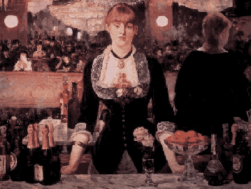

<HTML><HEAD><TITLE>Snappers</TITLE></HTML>

<BODY BACKGROUND="" BGCOLOR="#ffffff" 
TEXT="#000000" LINK="#603000" ALINK="#ffff00" VLINK="#503000">
<CENTER>
<H1></H1>
<I>(In Three Parts)</I>
</CENTER><P>

My wife was a bartender when we first met.  She worked in a dive on the 
New Jersey shore that looked kind of like this: <P>

<CENTER>
<P>
</CENTER>

We got married, she got pregnant, and that was the end of her career as
a bartender.  Our first child was a girl, Eliza.<P>

Maggie and I had been the last of our friends to get married, but the
first to have children.  Bill and Susan, our best friends,
had been married for years, and the four of us used to do a lot of partying 
and late-night carousing together.  When Eliza was born, Maggie and I 
were especially excited to introduce our new plaything to Bill and Susan,
assuming they'd be as excited about her as we were.<P>

We were disappointed in their reaction.  They visited in the hospital, 
but seemed distracted and subdued.  We'd looked forward to telling them
the long story of the delivery, but they didn't seem as interested as
we'd thought.  They left early that day, and a few days later when they visited
us at home they didn't gush over the baby like we'd expected them to, and they
seemed impatient with all our parent-talk.<P>

Deep down inside, Maggie and I finally realized, Bill and Susan thought it was 
uncool of us to have become parents.  We'd been a pretty 
freewheeling foursome, always drinking and smoking and driving too
fast and using foul language and acting like idiots together.  But 
Maggie and I fully intended to go on doing these
things as much as we could, and yet we could not make Bill and Susan 
believe this.  Suddenly we were their 'quiet' friends, the
ones they visited on Sunday afternoon instead of Friday night.  <P>

We had a talk with them about this and asked them to please trust 
that we were the same people we'd been before.  We all hugged, and Maggie
and Susan wiped away tears and all that shit ... but then we found ourselves
unable to get our friendship back into the rhythm it had had before.  Nothing
we did worked.  They called us impulsively one snowy winter night and suggested
we meet them at a restaurant.  We did it, but first we had to spend    
half an hour bundling little Eliza into a snow suit and squeezing the pudgy
overstuffed package into a car seat, and by the time we got there we were  
both in horrible moods.  On days the weather was good, though, Bill and Susan
wouldn't call. <P>

No matter how we tried, we couldn't get Bill or Susan to understand which
things were hard for us and which were easy.  Putting a snow suit on a 
baby is hard; changing a diaper, on the other hand, is incredibly easy.  
Only a person who's never changed one would think twice about doing it;
anybody who's done it knows it's nothing.
But Bill would stand there and heckle me while I changed Eliza's diaper.  
He'd cackle about how disgusting it was, and one day this started to bug 
me so much I threw a wrapped-up soaked diaper into his lap.  He
yelped as it I'd just tossed him a lit bomb and ran into the bathroom 
screaming that he had to wash himself off.<P>

It's sad to realize this, but our friendship with Bill and Susan was
ultimately not strong enough to survive the birth of Eliza, and
Maggie and I found ourselves spending a lot of time alone together in these 
first few years after she was born.  Sometimes on a weekend night when there 
was nothing good on TV and we had nothing else to do we'd go into the kitchen 
and entertain ourselves sampling all the incredible drinks Maggie
knew how to make from her days working that bar on the Jersey shore. 
She'd make blue whales, frozen sea breeze dauiquiris, neat martinis with 
toothpick-pierced olives, perfect tequila sunrises that shimmered like 
Georgia O'Keefe landscapes ... she'd stir them up, we'd drink them down, 
comparing and contemplating and reviewing them as if we were writing a 
Consumer's Reports article on mixed drinks.  It was great. <P>

<CENTER><I>
<A HREF="Snappers2.html">Continue to Part 2 of 3</A>
</I></CENTER><P>

<A HREF="../Queensboro.html">Queensboro Ballads</A><BR>
by <A HREF="http://www.litkicks.com/HomePages/LeviAsher.html">Levi Asher</A>

</BODY></HTML>
